← Back to Projects
07 • Mixed-Use + Climate
Wadi Court Mixed-Use
An urban wadi where retail, living, shade and movement converge into a walkable climate-responsive destination.
CLIMATE BECOMES PLACE
Design Narrative
The project is organized by climate before it is organized by image.
The project uses the wadi as an urban device: cooling the public realm, activating retail, and turning circulation into a lifestyle spine.
A shaded green corridor, retail podium, water microclimate and residential layers above podium gardens.
Pedestrian-first retail spineActive podiumRooftop amenity poolClimate shadingWater + green corridorBronze screens
Strategic Lens — Climate as Urban Value
How can heat, shade, water and movement become the organizing logic of a mixed-use destination?
Use the urban wadi as cooling spine, public realm, circulation system and retail address.
An active podium, residential layers, rooftop amenities, bronze screens and water-green corridors build a climate-responsive urban section.
A shaded pedestrian wadi where the climate strategy is also the project identity.
Environmental response directly strengthens walkability, dwell time and mixed-use coherence.
Curated Visual Gallery
Wadi Court Mixed-Use
A visual sequence of architecture, atmosphere, movement and detail.

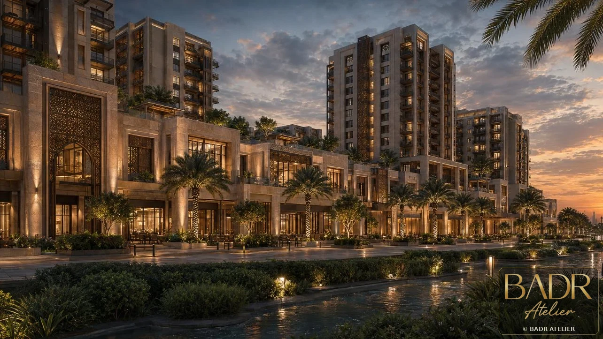
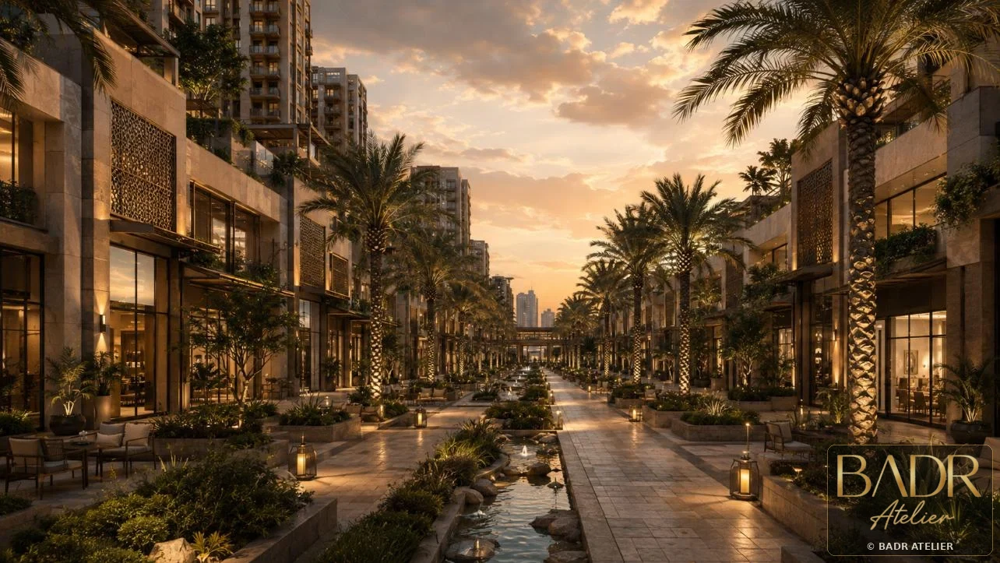
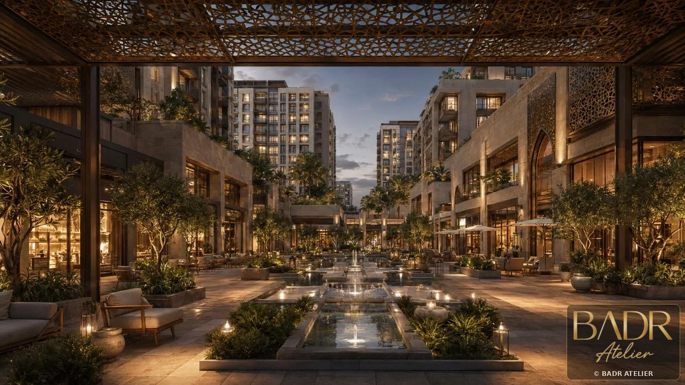
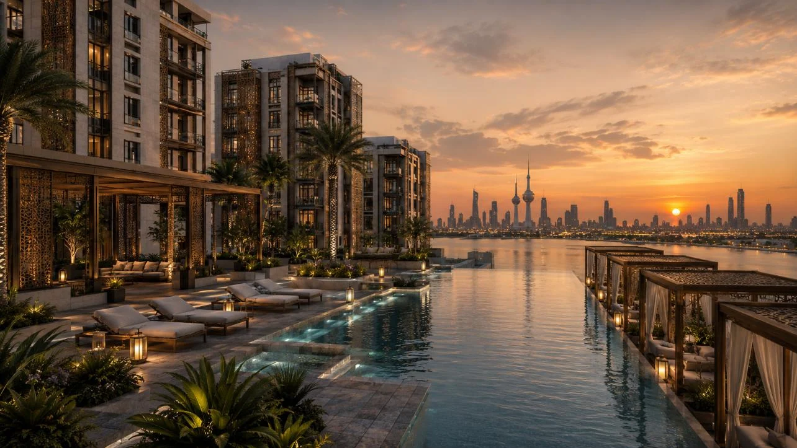
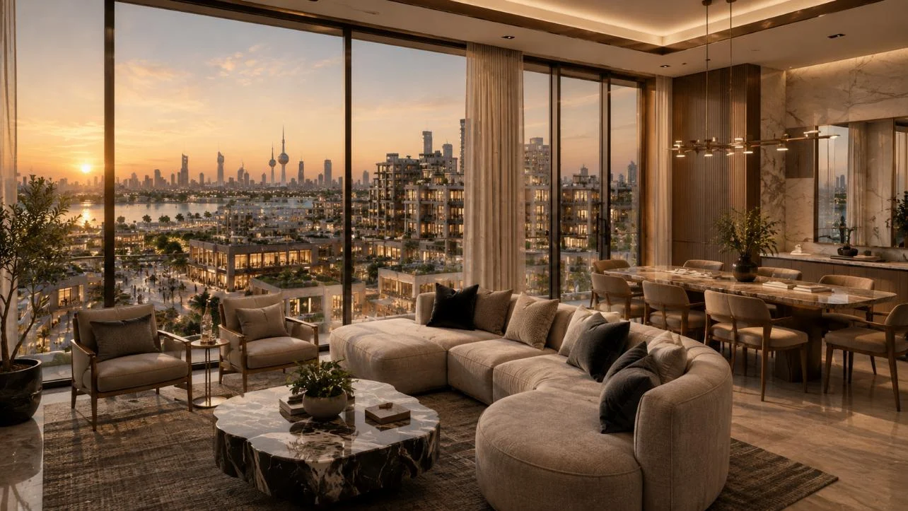
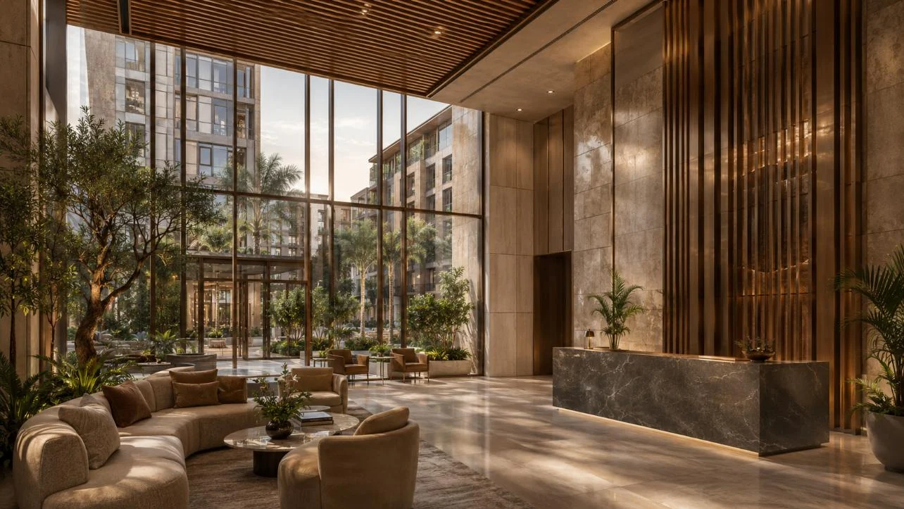
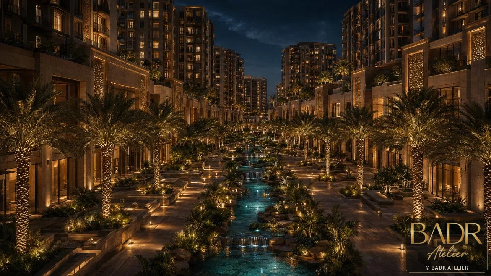
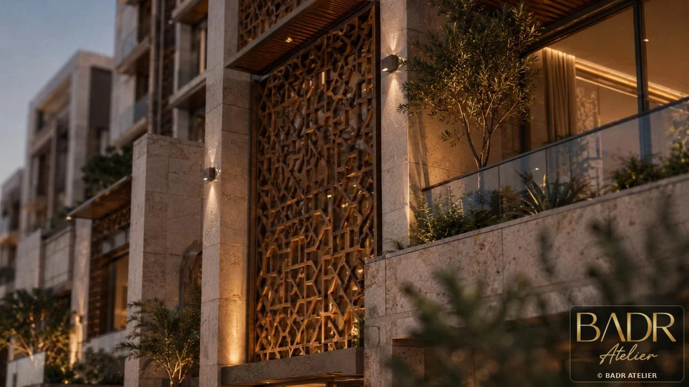
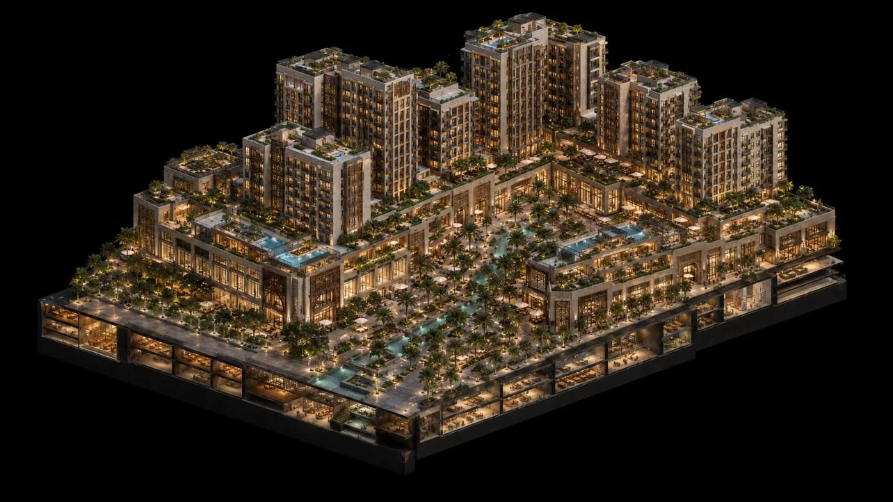
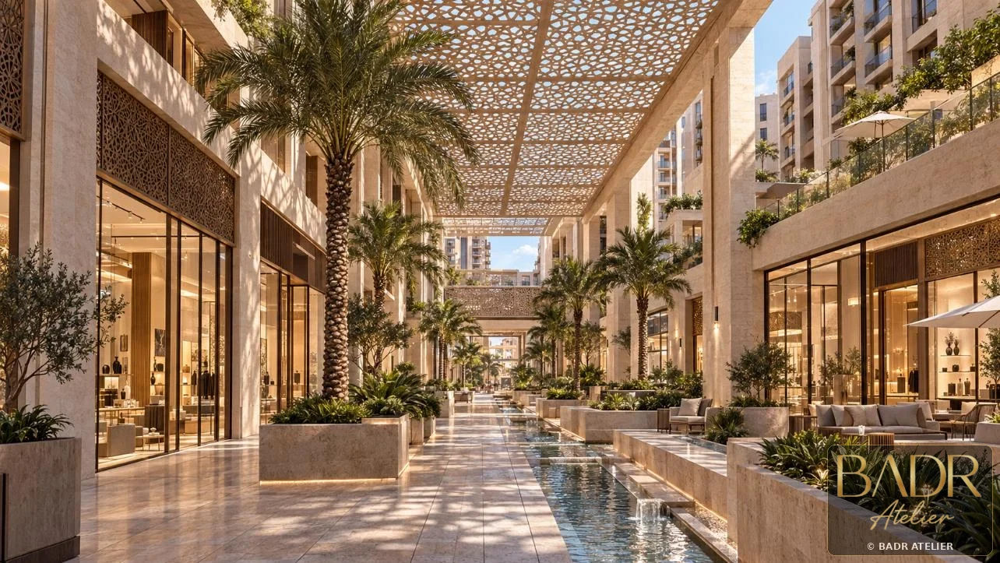
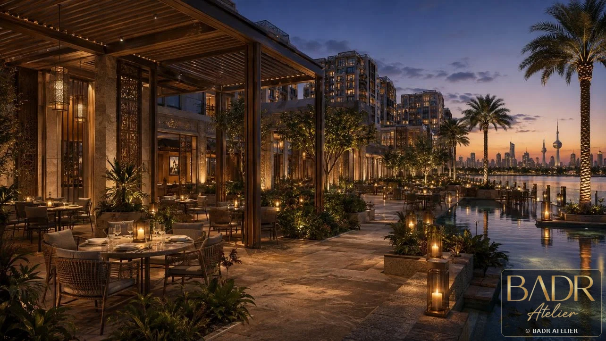
Key Features
- Pedestrian-first retail spine
- Active podium
- Rooftop amenity pool
- Climate shading
- Water + green corridor
- Bronze screens
- Residential layers
Spaces + Experiences
- Retail spine
- Podium gardens
- Residential towers
- Rooftop amenities
- Water corridors
- Public plazas